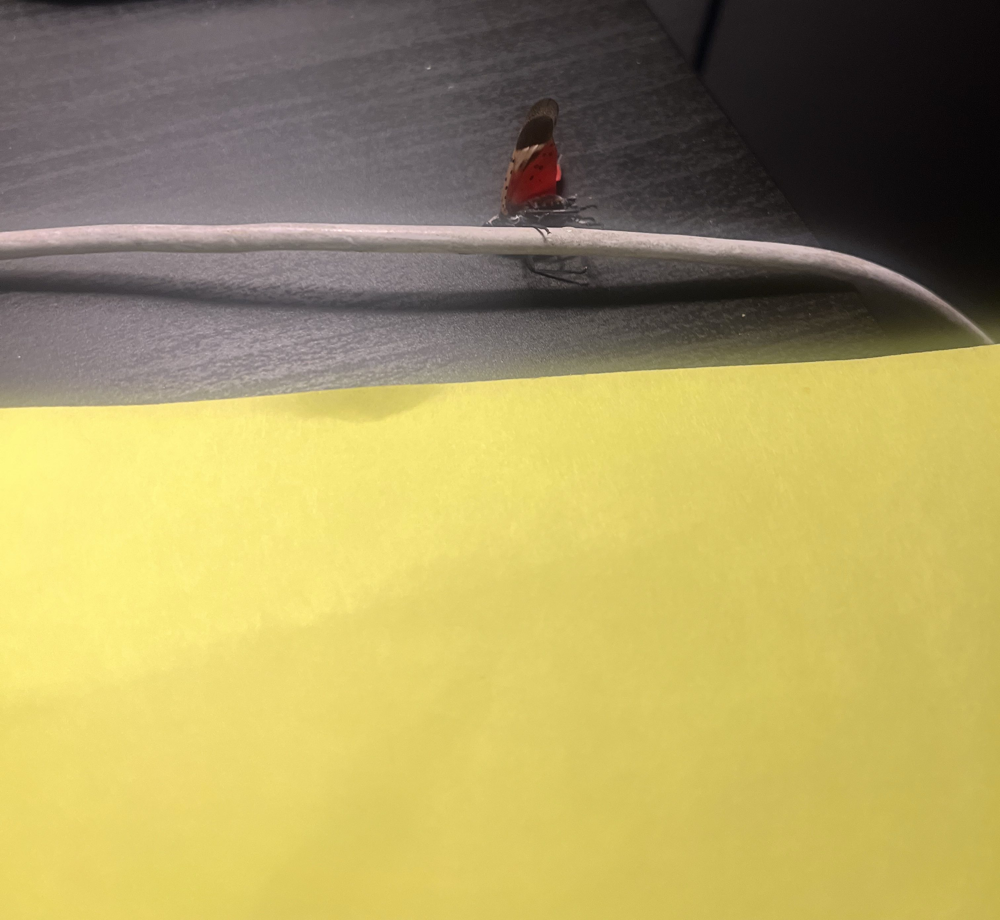
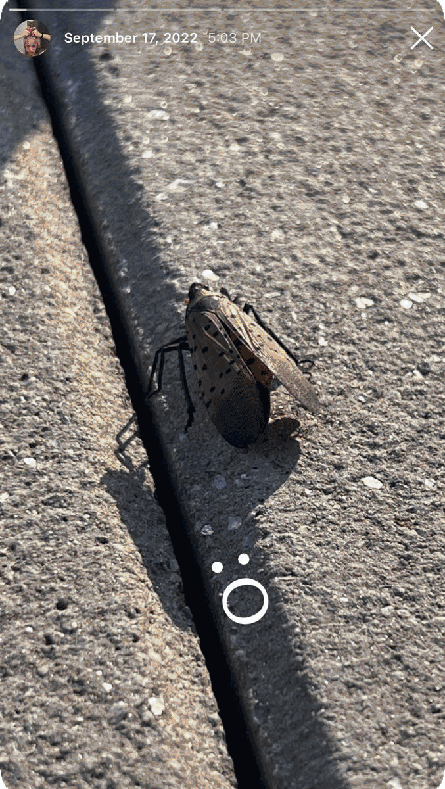
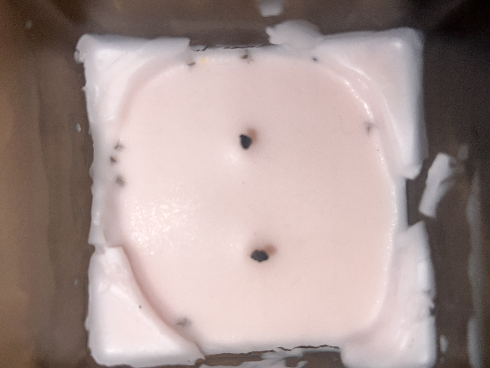

The Spotted Lanternfly, Lycorma delicatula, is an invasive species that poses as a threat to our food supply. Lanternflies are native to parts of East Asia, where they once had the decency to be kept in check by their natural predators. They have began appearing in the United States starting with Pennsylvania. With the absence of a natural predator they are now spreading relentlessly across the East Coast. This means the bugs are now taking over New York City - which is supposed to be rat turf. It is up to us, as humans, to step up and become the predators. But how do we get rid of the lanternflies? We kill them. Simple. It's a primal instinct buried deep within our DNA, dulled by the veneer of civilization, but it's time to connect with our evolutionary roots. We must resist against sympathy and focus on getting rid of the species. Some may find them scary. Some may find them pretty. Some may find it boring even. Whichever category you may fall into, it is up to you to find a method that works for you. This may be contingent on ethics or enjoyment. No judgement here.
Whilst I used to feel remorse having to purposely kill these bugs, they are vermin that have spread to every nook and cranny. My final straw was going home after a night class right before midnight. I heard an ominous scratching sound on my desk. After realizing that I wasn’t imagining things I flipped over a piece of paper to spot a lanternfly in my room. It was a visceral moment that ignited a personal vendetta against the lanternflies. I also genuinely contemplated burning everything in my room. These bugs colonize quickly, and this is maybe why I have such distain towards them.
designed and developed by Themis ☻
The tried and true instinctual method of killing insects. Whilst we are often discouraged from stepping on and arbitrarily deciding to take the life of another living being as children, this does not apply to the lanternfly. Assert your dominance as a larger creature to your heart’s content.
The first time I saw a lanternfly was on a rooftop. I found the bug quite beautiful to look at. I simply had to let my loyal instagram followers know. To my dismay I was immediately informed that I was, in fact, stupid. This bug is an invasive species and so I killed it after exploiting its’ beauty.
Lanternflies, similar to other insects are weak swimmers. If you have sadistic tendencies and want to inflict pain upon this bug prior to killing it this may be a method to explore. Some say that drowning is one of the worst ways to die because you can feel every moment of it.
This is another slow kill method in which one hit does not kill the lanternfly but rather slowly injures it to its eventual death. This happened to me once at a cafe where I tried to squash a lanternfly with an empty plastic cup. I accidentally didn’t kill it in one go and had to keep squashing and smushing the lanternfly. It deeply unsettled me and I get nightmares about it somtimes. Perhaps this was my karma for using single-use plastics.
Insects are attracted to light. They can’t help it. What could be more fitting than killing a lanternfly with the very thing in its’ name? Traditional lanterns have a live flame. You could probably do this with a candle as an alternative and bury the corpse in the wax. Then you’d actually have completed a DIY project to preserve a dead lanternfly for home decoration purposes. After all, they are pretty to look at.
maybe this is our natural selection as the biggest colonizers of nature.